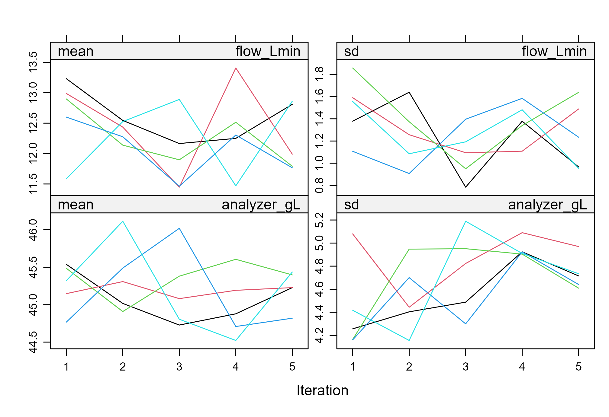
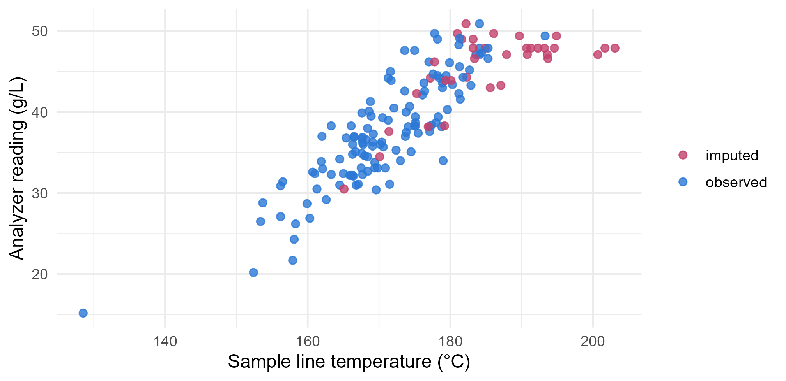

Module 1 · Lesson 13 of 14 Week 28 of 160 About 5–7 hours
Missing data II: multiple imputation
Filling the gaps many times over, and keeping track of the uncertainty
Impute missing values several times with mice, analyze every completed dataset, combine the results with Rubin’s rules, check the imputations with diagnostics, and test how sensitive your conclusions are to the missing-data assumptions.
Last lesson ended with a puzzle. Any single guess for a missing value, however clever, is treated as a real measurement by the analysis that follows, so the results look more certain than they are. Multiple imputation solves the puzzle with a beautifully simple idea: don’t fill in the gaps once. Fill them in several times, each time with different plausible values, analyze every version, and then combine the results. Where the versions agree, the missing values didn’t matter much. Where they disagree, that disagreement is exactly the extra uncertainty that the missing data causes.
It’s like asking five careful colleagues to fill in the gaps independently. If their answers all agree, you can relax. If they don’t, you’ve learned how much the gaps really matter!
In this lesson you’ll:
- create multiple imputations with the mice package
- analyze each completed dataset, and pool the results
- combine estimates by hand with Rubin’s rules
- check the imputations with diagnostics, and choose a suitable method
- decide how many imputations you need
- test how your conclusions change if the data are missing not at random
The three steps
Multiple imputation always works in three steps:
- Impute. Create m completed copies of the data. In each copy, every missing value is filled in with a random draw from a model that predicts it from the other variables.
- Analyze. Run the same analysis, say a mean or a regression, on each of the m copies.
- Pool. Combine the m results into one estimate and one standard error, using Rubin’s rules.
The mice package (Multivariate Imputation by Chained Equations) does all three. “Chained equations” means that it imputes one variable at a time, each from all the others, and cycles round several times until the imputations settle down.
We’ll use the analyzer study from the last lesson, keeping the variables you’d have in real life: the temperature, the flow and the analyzer’s reading. The lab’s results stay aside, so that we can check the answers against the truth: a true mean concentration of 39.6 g/L, where deleting the missing readings gave 37.6.
analyzer <- read_csv("data/analyzer_study.csv", show_col_types = FALSE)
d <- select(analyzer, temp_C, flow_Lmin, analyzer_gL)Imputing with mice
library(mice)
#>
#> Attaching package: 'mice'
#> The following object is masked from 'package:stats':
#>
#> filter
#> The following objects are masked from 'package:base':
#>
#> cbind, rbind
imp <- mice(d, m = 5, seed = 2026, printFlag = FALSE)
imp
#> Class: mids
#> Number of multiple imputations: 5
#> Imputation methods:
#> temp_C flow_Lmin analyzer_gL
#> "" "pmm" "pmm"
#> PredictorMatrix:
#> temp_C flow_Lmin analyzer_gL
#> temp_C 0 1 1
#> flow_Lmin 1 0 1
#> analyzer_gL 1 1 0m = 5 makes five imputations, seed makes them reproducible, and printFlag = FALSE hides the progress messages. The printout shows what mice decided. The method for each variable is pmm, which stands for predictive mean matching, and the temperature gets no method because it’s complete. The predictor matrix shows which variables are used to impute which: here, everything predicts everything else.
Predictive mean matching is mice’s default for numbers. For each missing value, it predicts a value from the regression, finds a few observed cases whose predictions are closest, and borrows the actual value of one of them, chosen at random. Because it only ever borrows real values, its imputations always look realistic. You’ll see the downside of that soon.
complete() gives you one of the completed datasets, and complete(imp, "long") stacks all five, with a column .imp saying which is which:
complete(imp, "long") |>
group_by(.imp) |>
summarise(mean_conc = mean(analyzer_gL))
#> # A tibble: 5 × 2
#> .imp mean_conc
#> <int> <dbl>
#> 1 1 39.3
#> 2 2 39.3
#> 3 3 39.4
#> 4 4 39.2
#> 5 5 39.4Five slightly different completed datasets, so five slightly different means.
Your turn. Run mice on d, and look at the method it chose for each variable. (d is ready in every exercise.)
The chosen methods are stored in imp$method.
imp <- mice(d, m = 5, seed = 2026, printFlag = FALSE)
imp$methodPredictive mean matching for the two incomplete variables, and nothing for the complete temperature.
Analyzing and pooling
with() runs an analysis on each completed dataset, and pool() combines the results. To estimate a mean, fit a regression with only an intercept, analyzer_gL ~ 1: its intercept is the mean, and it comes with a standard error.
fit <- with(imp, lm(analyzer_gL ~ 1))
summary(pool(fit))
#> term estimate std.error statistic df p.value
#> 1 (Intercept) 39.31862 0.5577569 70.4942 154.394 2.509662e-119The pooled mean is 39.3 g/L. That’s much closer to the truth (39.6) than the complete-case mean (37.6), because the imputation model used the temperature, which explains why the readings went missing.
Your turn. Pool a regression of the analyzer reading on temperature and flow.
Two predictors, joined with +: temp_C + flow_Lmin.
imp <- mice(d, m = 5, seed = 2026, printFlag = FALSE)
fit <- with(imp, lm(analyzer_gL ~ temp_C + flow_Lmin))
summary(pool(fit))One row per coefficient, each pooled across the five imputations. The concentration rises by about 0.57 g/L per °C, and falls by about 1.45 g/L for each extra L/min of flow. Keep that 0.57 in mind: it’s a little low, and the next steps show why.
Rubin’s rules
How does pool() combine the results? With three simple formulas, known as Rubin’s rules. Suppose each of the m analyses gives an estimate \hat{Q}_i, with a squared standard error U_i.
- The pooled estimate is just the average: \bar{Q} = \frac{1}{m}\sum_i \hat{Q}_i.
- The within-imputation variance is the average squared standard error, W = \frac{1}{m}\sum_i U_i. It’s the uncertainty that you’d have if there were no missing data.
- The between-imputation variance is the variance of the estimates, B = \frac{1}{m-1}\sum_i (\hat{Q}_i - \bar{Q})^2. It measures how much the imputations disagree, which is the uncertainty caused by the missing data.
The total variance adds them up, with a small correction because m is finite:
T = W + \left(1 + \frac{1}{m}\right) B
The pooled standard error is \sqrt{T}. One more number is worth knowing: \lambda = (1 + 1/m)B / T is the proportion of the total variance that’s due to the missing data. The closely related fraction of missing information (fmi in mice’s output) adjusts it slightly for the degrees of freedom. Both tell you how much the missing values matter for this particular estimate.
Your turn. Here are the five estimates of the mean, and their squared standard errors, from one run of mice. Pool them by hand, and compute the pooled standard error.
The between-imputation variance is multiplied by 1 + 1/m: (1 + 1/m) * B.
estimate <- c(39.57, 39.94, 39.64, 39.61, 39.43)
u <- c(0.3522, 0.3897, 0.3615, 0.3484, 0.3562) # squared standard errors
m <- 5
W <- mean(u)
B <- var(estimate)
total <- W + (1 + 1/m) * B
sqrt(total)A pooled standard error of 0.635 g/L. If the imputed values were real measurements, it would have been \sqrt{W} = 0.601. The extra uncertainty is the price of the 36 missing readings, honestly accounted for. Here, \lambda is about 0.10: a tenth of the uncertainty comes from the missing values.
Checking the imputations
Imputations are only as good as the model behind them, so always look at them. Two checks are standard.
Did the algorithm settle down? mice cycles round its chained equations several times (5 by default). plot(imp) draws the mean and standard deviation of the imputed values at each iteration, one line per imputation. You want the lines to mingle like a plate of spaghetti, with no trends:
plot(imp, layout = c(2, 2))
Do the imputed values make sense? Plot them next to the observed values. Here’s the first imputation, with the reading against temperature, and the imputed values in rose:
complete(imp, 1) |>
mutate(value = if_else(is.na(d$analyzer_gL), "imputed", "observed")) |>
ggplot(aes(x = temp_C, y = analyzer_gL, color = value)) +
geom_point(size = 2, alpha = 0.8) +
scale_color_manual(values = c(imputed = "#C2416C", observed = "#2a78d6")) +
labs(x = "Sample line temperature (°C)", y = "Analyzer reading (g/L)", color = NULL) +
theme_minimal(base_size = 12)
Look at the hottest samples, on the right. The trend clearly keeps rising, but the imputed values flatten out. Predictive mean matching can only borrow values that were really observed, and the highest observed reading is 50.9 g/L. But the missing readings are the hottest samples, and the lab says that some of them were as high as 60 g/L. PMM can’t reach them, so the hottest imputations are too low. That’s why the pooled mean came out at 39.3 rather than 39.6, and the temperature slope at 0.57 rather than about 0.63.
The fix is a method that can extrapolate, beyond the observed values. method = "norm" imputes from a Bayesian linear regression, with random noise around each prediction. Its imputations follow the trend, wherever it leads.
Your turn. Confirm the diagnosis. Find the largest value that PMM imputed, and compare it with the largest observed reading.
imp$imp is a list with one data frame of imputed values for each variable. You want the one for analyzer_gL.
imp <- mice(d, m = 5, seed = 2026, printFlag = FALSE)
c(largest_observed = max(d$analyzer_gL, na.rm = TRUE),
largest_imputed = max(unlist(imp$imp$analyzer_gL)))Both are 50.9 g/L. No imputed value can ever exceed the largest observed one, because PMM only borrows observed values.
Your turn. Impute with method = "norm" instead, and pool the mean again.
The method’s name goes in quotes: method = "norm".
imp <- mice(d, m = 5, method = "norm", seed = 2026, printFlag = FALSE)
summary(pool(with(imp, lm(analyzer_gL ~ 1))))About 39.6 g/L, right on the lab’s true mean. PMM is an excellent default, because it keeps imputations realistic. But when the missing values lie beyond the observed ones, as they do here, a model-based method like norm is the better choice.
Your turn. Pool the regression on temperature and flow again, this time with norm imputations. Has the temperature slope recovered?
Inside with(), write the analysis as you would on a complete dataset: lm(analyzer_gL ~ temp_C + flow_Lmin).
imp <- mice(d, m = 5, method = "norm", seed = 2026, printFlag = FALSE)
fit <- with(imp, lm(analyzer_gL ~ temp_C + flow_Lmin))
summary(pool(fit))About 0.64 g/L per °C, up from PMM’s 0.57, and in line with the complete-case regression from the last lesson. Remember that the complete cases were already fine for this slope, because the missingness depends on the temperature, which is in the model. The real gain from imputation here is the overall mean.
How many imputations?
The classic advice was that 5 imputations are enough, and for the estimates themselves they often are. But standard errors and p-values need more to be stable from one run to the next. A common modern rule of thumb is to use at least as many imputations as the percentage of incomplete cases. Here, 26% of the samples are incomplete, so about 25 imputations would be a good choice. With modern computers, that’s rarely a problem: 20 imputations of this dataset take only moments.
A few more choices matter more than the number of imputations:
- Include every variable in your analysis in the imputation model, the outcome too. Leaving one out tells mice that it’s unrelated to the missing values, and that weakens its relationships in the completed data.
- Add auxiliary variables: variables that aren’t in your analysis but that predict the missing values, or predict which values are missing. They make the imputations both more accurate and less uncertain. You’ll try one in the challenge round.
- Leave out ID columns and anything else that’s meaningless as a predictor, like
sample_id.
What if the data are MNAR?
Everything so far assumed that the readings are missing at random, given the temperature and the flow. What if they aren’t? Suppose that the analyzer also tends to fail at high concentrations, regardless of the temperature. Then the missing readings would be even higher than MAR predicts, and no amount of data could reveal it.
You can’t test that assumption, but you can test how much it matters. That’s a sensitivity analysis. The simplest kind is a delta adjustment: shift every imputed value by some amount \delta, and see how the conclusions change. mice’s post argument runs a line of code after each imputation step, so it can add \delta:
post <- make.post(d)
post["analyzer_gL"] <- "imp[[j]][, i] <- imp[[j]][, i] + 4" # add 4 g/L to each imputed reading
imp_mnar <- mice(d, m = 5, method = "norm", seed = 2026, printFlag = FALSE, post = post)
summary(pool(with(imp_mnar, lm(analyzer_gL ~ 1))))
#> term estimate std.error statistic df p.value
#> 1 (Intercept) 40.55281 0.7091857 57.18221 114.7593 3.521603e-86If the missing readings were 4 g/L higher than MAR predicts, the mean would be about 40.6 g/L instead of 39.6. Is a shift of 4 g/L plausible? That’s a question for the analyzer’s engineers, not for the data. A good report shows the results for a range of \delta values, and lets the reader see where the conclusions would change.
Challenge round
Challenge 1 · An auxiliary variable. Suppose that the lab’s results were available for this study. They aren’t part of the analysis, but they predict the analyzer readings extremely well. Include lab_gL in the imputation, with norm, and pool the mean of the analyzer readings. Compare the fraction of missing information, fmi, with the version without it.
Add the lab’s column, lab_gL, to the selection.
d_aux <- select(analyzer, temp_C, flow_Lmin, analyzer_gL, lab_gL)
imp <- mice(d_aux, m = 5, method = "norm", seed = 2026, printFlag = FALSE)
pool(with(imp, lm(analyzer_gL ~ 1)))$pooled[, c("estimate", "fmi")]The pooled mean is about 39.6 g/L, and the fraction of missing information drops to around 0.02, from about 0.12 without the lab’s results. With a variable that predicts the missing readings so well, the imputations hardly need to guess. In real studies, auxiliary variables are rarely this good, but even modest ones help.
Challenge 2 · A sensitivity table. Compute the pooled mean concentration for \delta = 0, 2 and 4 g/L, with norm imputations. Complete the function, and sapply() does the rest.
Pass the post object that the function just built: post = post.
pooled_mean <- function(delta) {
post <- make.post(d)
post["analyzer_gL"] <- paste("imp[[j]][, i] <- imp[[j]][, i] +", delta)
imp <- mice(d, m = 5, method = "norm", seed = 2026, printFlag = FALSE, post = post)
summary(pool(with(imp, lm(analyzer_gL ~ 1))))$estimate
}
sapply(c(0, 2, 4), pooled_mean)About 39.6, 40.1 and 40.6 g/L. Each extra 2 g/L of \delta raises the mean by about 0.45 g/L, because 22.5% of the readings are imputed (0.225 × 2 = 0.45). That’s a simple, honest way to report what the MAR assumption is worth.
Quick quiz
1. Why does multiple imputation create several completed datasets, instead of one?
A single imputation hides the uncertainty. The spread between several imputations shows it, and Rubin’s rules add it to the standard error.
2. In Rubin’s rules, what does the between-imputation variance B measure?
W is the ordinary sampling uncertainty, and B is the extra uncertainty from the missing data. The total is T = W + (1 + 1/m)B.
3. What’s the order of the three steps in a mice analysis?
Impute, analyze, pool, in that order.
4. Why did predictive mean matching underestimate the mean concentration in the analyzer study?
PMM can’t impute beyond the observed range. When the missing values lie beyond it, a method that extrapolates, like norm, is better.
5. Which of these improves an imputation model?
Include the analysis variables, outcome and all, plus any good auxiliary variables. Leave out IDs.
6. What does a delta-adjustment sensitivity analysis show?
The MAR assumption can’t be tested from the data, but a sensitivity analysis shows how much the conclusions depend on it.
Wrap-up
You’ve learned the most powerful general tool for missing data! Here’s the summary:
- The idea: impute several times, analyze each completed dataset, and pool, so that the uncertainty from the missing values is kept, not hidden.
- mice:
mice(data, m, method, seed), thenwith(imp, analysis), thensummary(pool(fit)).complete()gives the completed datasets. - Rubin’s rules: average the estimates, and add the within-imputation variance W to the between-imputation variance B: T = W + (1 + 1/m)B. The fraction of missing information shows how much the gaps matter.
- Diagnostics:
plot(imp)for convergence, and plots of imputed against observed values. PMM is realistic but can’t extrapolate.normcan. - Choices: use more imputations than the percentage of incomplete cases, include all the analysis variables plus auxiliary ones, and leave out IDs.
- Sensitivity: shift the imputations by \delta with
post, and report how the conclusions change.
TipPractice in RStudio (optional, about an hour)
Install mice with install.packages("mice"), and download analyzer_study.csv.
- mice’s own plots. Try
densityplot(imp)andstripplot(imp)on PMM andnormimputations. Can you see PMM’s ceiling? - The rule of thumb. Pool the mean with
m = 5,m = 25andm = 100, each with several different seeds. How much do the estimate and its standard error move between seeds, for eachm? - Imputation versus truth. For the 36 missing readings, compare the mean of the imputed values (from
complete(imp, "long")) with the lab’s values for the same samples. How close are PMM andnorm? - A full sensitivity analysis. Extend Challenge 2 to \delta from −4 to 8 g/L, and plot the pooled mean against \delta, with error bars of ±1.96 standard errors.
NoteKey words from this lesson
- Multiple imputation
- Filling in each missing value several times, analyzing every completed dataset, and pooling the results.
- Chained equations (mice)
- Imputing one variable at a time, each from all the others, and cycling round until the imputations settle.
- Predictive mean matching (PMM)
- Imputing a value by borrowing the observed value of a case with a similar prediction.
- Rubin’s rules
- The formulas that pool estimates and their variances across imputations: T = W + (1 + 1/m)B.
- Fraction of missing information (fmi)
- The share of an estimate’s uncertainty that’s caused by the missing data.
- Auxiliary variable
- A variable that’s not in the analysis, but that helps to predict the missing values.
- Sensitivity analysis
- Checking how much the conclusions change under different assumptions, for example a delta adjustment for MNAR data.
NoteWant to read more?
- Stef van Buuren, Flexible Imputation of Missing Data, chapters 2 to 6. The author of mice explains multiple imputation, Rubin’s rules, the imputation methods and diagnostics.
- Ian White, Patrick Royston and Angela Wood, “Multiple imputation using chained equations: Issues and guidance for practice”, Statistics in Medicine (2011). A very practical guide, and the source of the rule of thumb for m.